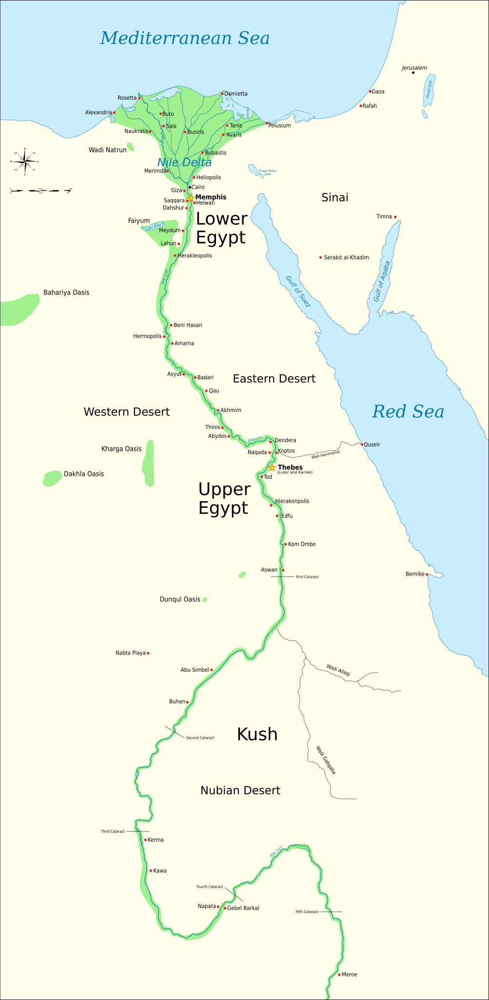

~3100 – 30 P.N.E. • ZEMLJA FARAONA
Tri hiljade godina jedna zemlja je izgledala gotovo isto — isti bogovi, isti faraoni, iste piramide. Dok su se carstva rađala i propadala oko Nila, Egipat je bio nepokolebljiv kao kamen od kog je gradio. Sve što znamo o njemu — hijeroglife, mumije, piramide — tek je vrh ledenog brega jedne od najdugotrajnijih civilizacija u istoriji čovečanstva.

Stari Egipat — civilizacija duž Nila. Gornji Egipat na jugu, Donji Egipat na severu • Wikimedia Commons